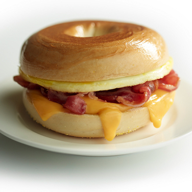
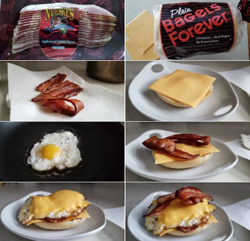

Egg Sandwich
Ingredients
- One Egg
- One Mini Bagel
- Cream Cheese or your choice of cheese
- Two pieces of Bacon
Instructions
-Put bacon in air fryer on 400 degrees for 15 minutes, flip half way through
-Put Bagel in toaster until prefered borwness
-Turn heat on stove to medium-high and start to cook one egg
-Sprinkle a little bit of salt and pepper on egg
-Flip egg when one side is cooked, you can crack the yolk or leave it
-Assemble sandwich
-Put cream cheese or prefered cheese on bagel
-Put egg on bagel
-Put bacon on top
-Enjoy your Egg Sandwich!